CARBON
Our complex and contentious relationship with a ubiquitous element.
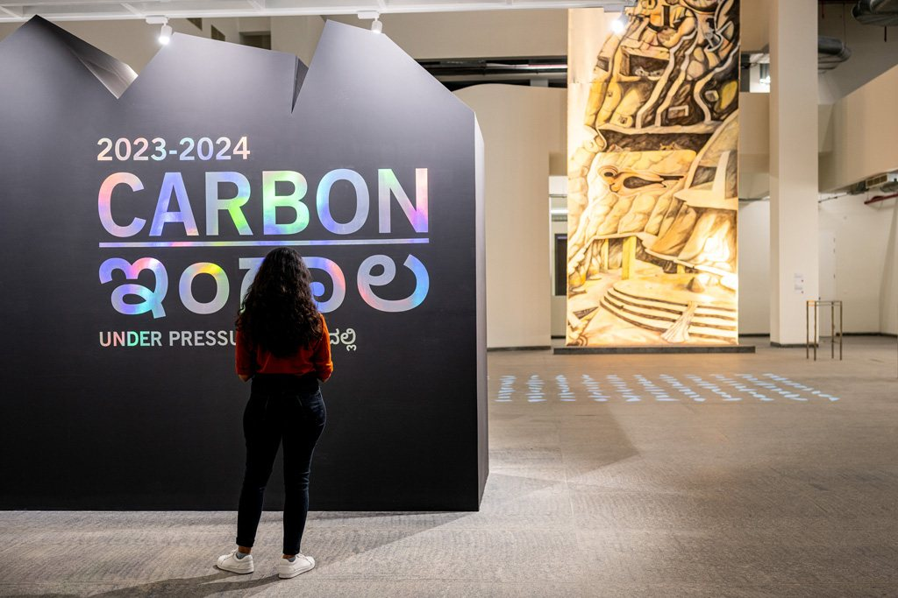
Stolen Horizons · Prabhakar Pachpute
- ROLE
- Curation, programming, exhibition design
- WHERE
- Science Gallery Bengaluru, Sanjaynagar
- WHEN
- 2023–24
- FORMAT
- Hybrid exhibition-season
The backbone of life, the hardest substance on earth, and the villain of the climate crisis: carbon has more than one story.
Most people only meet carbon in the context of climate change. CARBON reintroduced it as a fundamental framework for life, making the familiar unfamiliar while asking questions about our exploitative relationship with the natural world.
Over six months, 30+ exhibits, a food festival and film screenings opened many doors into carbon. Before the new building opened, pop-up exhibitions in Bengaluru's metro stations turned daily commutes into moments of science, and a Summer School on Carbon ran in the lead-up.
Carbon is not the villain
There is an urgent call to decarbonise: to sink and sequester the carbon we have pumped into the atmosphere in the name of development. But that framing pushes aside the vital role carbon plays in the relationships between practically all forms of life and non-life.
The exhibition moved through carbon's many lives: as coal, charcoal and diamond; as the petroleum that fuels our economies; as graphene, nanotubes and buckyballs; as the carbohydrate in your favourite snack; and as the measure by which we date the past. An advisory group of Bernadette Bensaude-Vincent, Dolly Kikon and Victor Seow helped us hold the chemistry, the history and the politics together.
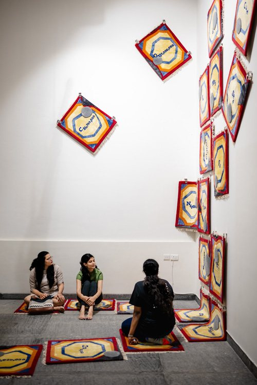
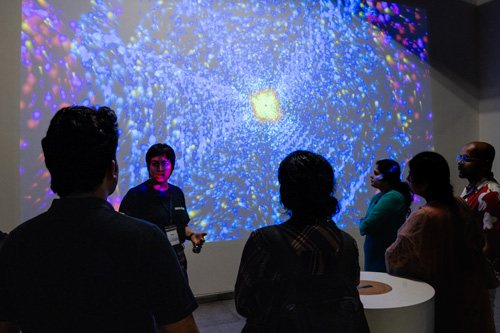
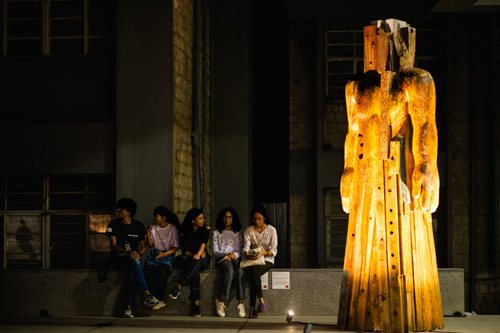
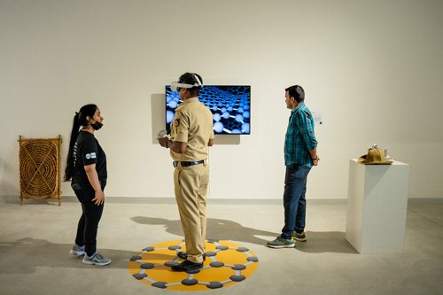
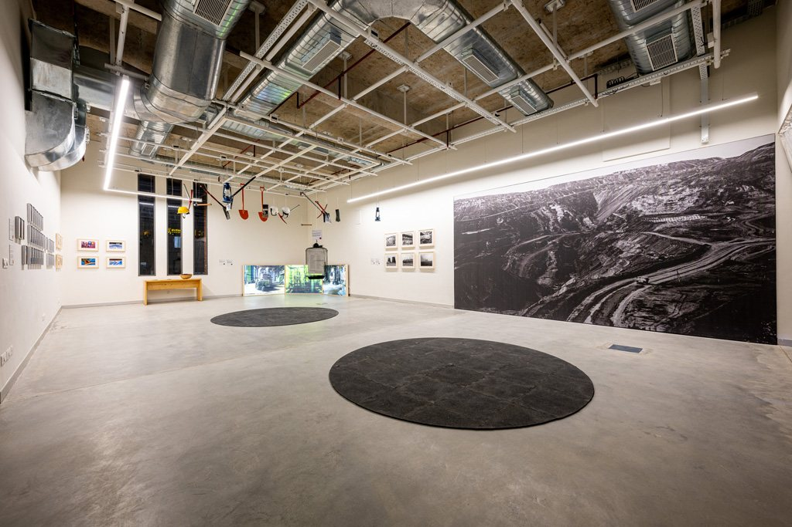
Effective science communication isn't just about sharing information. It's about creating experiences that resonate with people's daily lives.
Exhibition-in-a-Box
A portable, tabletop version of the exhibition for classrooms. It holds materials to build your own versions of the artworks and set them up as a mini exhibition, plus experiments and activities that build on the ideas behind each exhibit, so complex ideas become tangible for young learners.
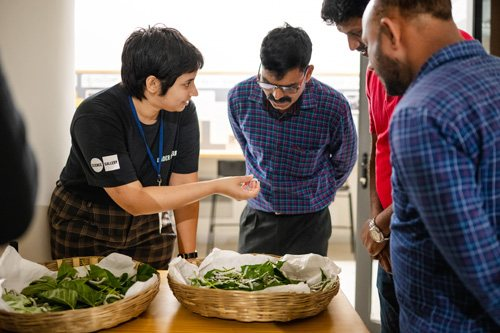
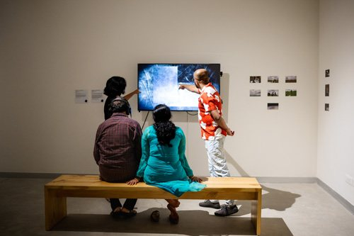
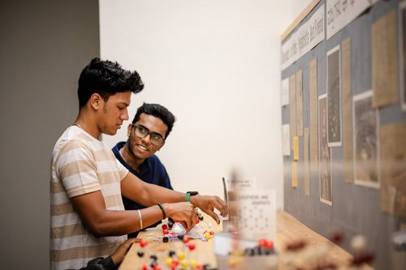
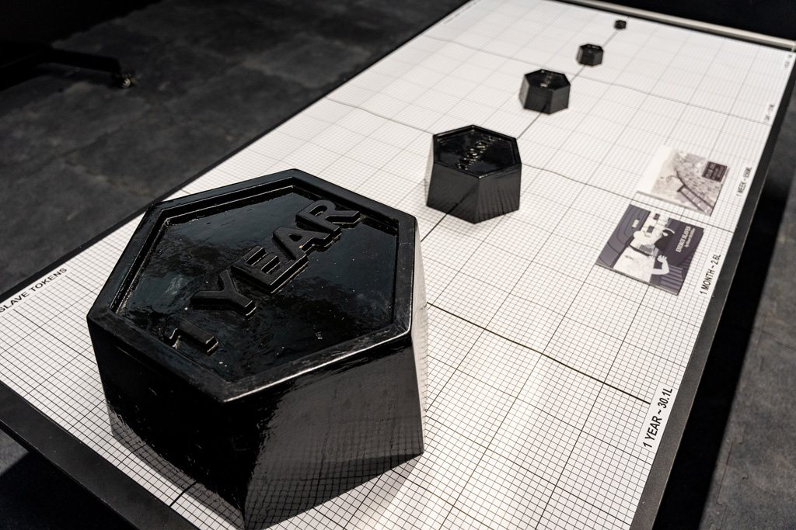
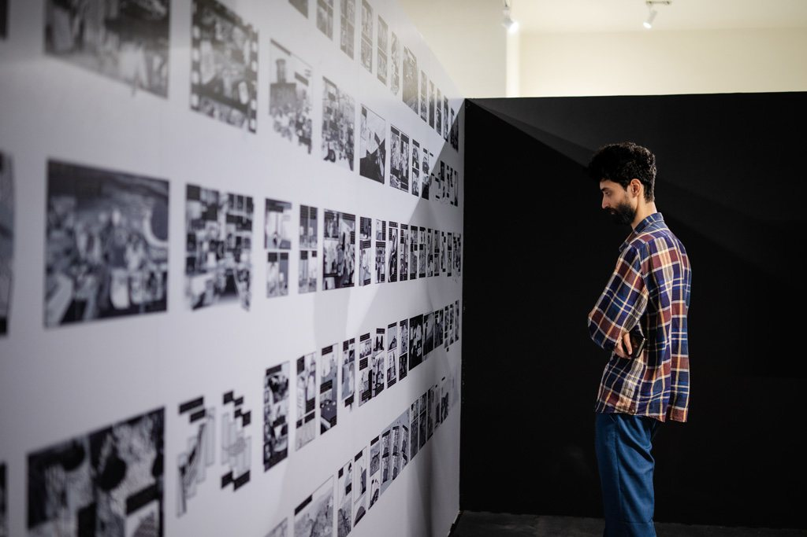
EXHIBITS & ARTISTS
- 01Aerocene BackpackTomás Saraceno
- 02Carbon BlackAnaïs Tondeur
- 03Foresta-InclusiveJane Tingley
- 04Stolen HorizonsPrabhakar Pachpute
- 05In the Making of SelfArunkumar H G
- 06The Coarse Fabric of Being HumanRaqs Media Collective
- 07JīvāṇuShashi Thutupalli, Chakraborty · NCBS
- 08The Nanocarbon CocoonNoPo
- 09Of Machines and MenMitter Bedi, T.S. Satyan · MAP collection
- 10Deep WeatherUrsula Biemann
- 11Energy Slave TokensDisnovation.org
- 12Energy SlavesStuart McMillen · webcomic
- 13Fire ContinuumRonny Sen
- 14Carbon NanoverseAndrea Rassell
- 15Cosmic ChiasmusSusan Eyre
TEAM
CREDITS & SUPPORT
Presented by